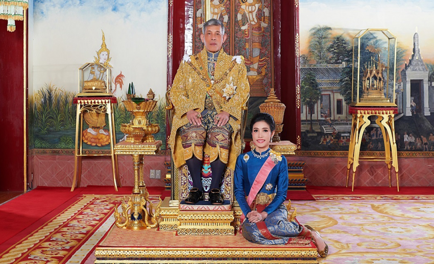

ข่าวสารประจำวัน
ผมสอบถามเจ้าหน้าที่รักษาความปลอดภัยของวัดบวรว่า
ปิ่นโตของญาติโยมท่านผู้ใดหรือ? มีหลายเถาที่วางอยู่ เจ้าหน้าที่บอกผมว่า
" เป็นปิ่นโตของในหลวงที่ส่งมาถวายพระ
มิเคยได้ขาดว่างเว้นเลยแม้แต่สักวันเดียว ทั้งเช้าและเพล แม้ฝนจะตกหนัก
น้ำท่วม พระอาจจะมิได้ออกบิณฑบาต แต่ใน๓๖๕วัน มิเคยขาดเลยแม้แต่วันเดียว
ที่ทั้งเช้าและเพล ปิ่นโตจากในหลวงส่งมาถวายพระ "
ขอพระองค์ทรงพระเจริญ
ปิ่นโตของญาติโยมท่านผู้ใดหรือ? มีหลายเถาที่วางอยู่ เจ้าหน้าที่บอกผมว่า
" เป็นปิ่นโตของในหลวงที่ส่งมาถวายพระ
มิเคยได้ขาดว่างเว้นเลยแม้แต่สักวันเดียว ทั้งเช้าและเพล แม้ฝนจะตกหนัก
น้ำท่วม พระอาจจะมิได้ออกบิณฑบาต แต่ใน๓๖๕วัน มิเคยขาดเลยแม้แต่วันเดียว
ที่ทั้งเช้าและเพล ปิ่นโตจากในหลวงส่งมาถวายพระ "
ขอพระองค์ทรงพระเจริญ

#ผมจะปกป้องในหลวงตราบจนชีวิตเป็นผุยผง
ต่อให้เหลือผมเป็นคนสุดท้ายผมก็จะไม่มีวันเนรคุณต่อสถาบัน....
สังคมต้องมีสตินะครับ
อย่าหลงเชื่อผู้ไม่หวังดีปล่อยข่าวทำลายสถาบันพระมหากษัตริย์
ข่าวที่บ่อนทำลายชาติ ความมั่นคง หลายครั้งที่เราพลาดเพราะเชื่อข่าวลือ
สิ่งที่ในหลวงทรงทำดีต่อชาติบ้านเมืองมากมาย
เเละหลายๆครั้งที่พระองค์ทรงทำเเบบปิดทองหลังพระ
ต่อให้เหลือผมเป็นคนสุดท้ายผมก็จะไม่มีวันเนรคุณต่อสถาบัน....
สังคมต้องมีสตินะครับ
อย่าหลงเชื่อผู้ไม่หวังดีปล่อยข่าวทำลายสถาบันพระมหากษัตริย์
ข่าวที่บ่อนทำลายชาติ ความมั่นคง หลายครั้งที่เราพลาดเพราะเชื่อข่าวลือ
สิ่งที่ในหลวงทรงทำดีต่อชาติบ้านเมืองมากมาย
เเละหลายๆครั้งที่พระองค์ทรงทำเเบบปิดทองหลังพระ

เนื่องในโอกาสวันเฉลิมพระชนมพรรษา
พระบาทสมเด็จพระเจ้าอยู่หัว
วันที่ ๒๘ กรกฎาคม ๒๕๖๔
ทรงเจริญพระชนมพรรษา ๖๙ พรรษา
ขอพระองค์ทรงพระเจริญยิ่งยืนนาน
ด้วยเกล้าด้วยกระหม่อม ขอเดชะ
ข้าพระพุทธเจ้า ผู้ดูแลเพจ"เสื้อเทิดพระเกียรติฯสายรัดข้อมือในหลวง"
พระบาทสมเด็จพระเจ้าอยู่หัว
วันที่ ๒๘ กรกฎาคม ๒๕๖๔
ทรงเจริญพระชนมพรรษา ๖๙ พรรษา
ขอพระองค์ทรงพระเจริญยิ่งยืนนาน
ด้วยเกล้าด้วยกระหม่อม ขอเดชะ
ข้าพระพุทธเจ้า ผู้ดูแลเพจ"เสื้อเทิดพระเกียรติฯสายรัดข้อมือในหลวง"
ทนายอานนท์ฯ โพสต์การชุมนุมโดยเว้นระยะห่าง
มีมาตรการป้องกันโอกาสติดมีโควิดน้อยกว่าอยู่ในห้องอากาศปิด
คห.๑ คนจัญไรก็จะเป็นแบนี้ไง
คห.๒ ทนายอานนท์อ้างมีภูมิกันโควิด แล้วคนในม็อบล่ะ?
มีมาตรการป้องกันโอกาสติดมีโควิดน้อยกว่าอยู่ในห้องอากาศปิด
คห.๑ คนจัญไรก็จะเป็นแบนี้ไง
คห.๒ ทนายอานนท์อ้างมีภูมิกันโควิด แล้วคนในม็อบล่ะ?